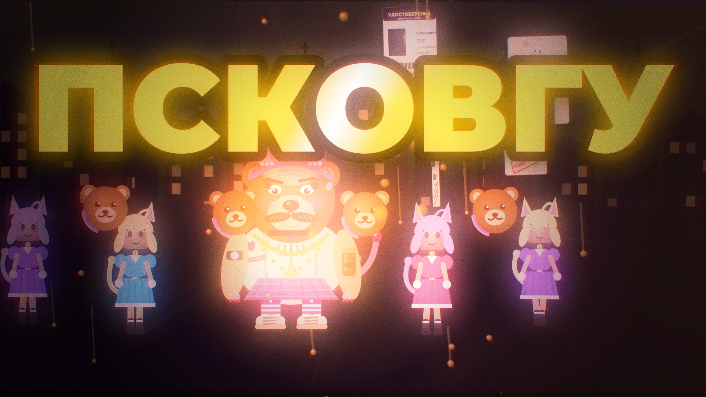

ПРОЦЕДУРНОЕ КИНО · СВЕЖЕЕ
ФУРРИ эдит
Горем фуррифембоев, альбомный 16:9: главный ГГ — МИША БУДРИН, 102 КГ, медведь-скуф и полный бойкиссер — чулочки в полоску, юбка-плиссе, кошачьи ушки, чокер с сердечком, румяна, лак на коготках и значок BOYKISSER. С ним ходят кошкодевочки, бойкиссер с ПОДДЕЛЬНЫМ удостоверением, общество фурри-мишей, парад по всему ПСКОВГУ в мудл, древнее зло некромант и косплей Хоумлендера с лазерными глазами. Концовка — он вскрылся и приложил к обвинению, что по причине ОТ ДЭДА. Картинка и музыка — код.
В превью видео играет без звука — включи звук кнопкой 🔊 в плеере.
MP4 весит 108 МБ, а GitHub берёт файлы до 100 МБ — поэтому в репозитории видео лежит архивом из двух частей (.z01 + .zip). Скачай обе части в одну папку и собери: zip -s 0 furry-ep01.zip --out furry-ep01.mp4
ПРЕДЫДУЩИЙ ХИТ
ДЭД великий суп
Эдит по мему «О великий суп наварили»: гимн Ультрамаринов, который все слышат неправильно. ДЭД из sleep9919 варит суп — лава, пловцы, чёрная супная дыра и Бог с половником. Картинка и музыка — код.

НОВОЕ Фурри эдит SHORTS 4
ДЭД великий суп
SHORTS 4
ДЭД великий суп
 ШОРТСЫ
Все четыре ролика
ШОРТСЫ
Все четыре ролика
 КИНО
Галерея фильмов
КИНО
Галерея фильмов
Всё в этом репозитории рисуется и озвучивается процедурно. Локально: python3 film/serve.py.